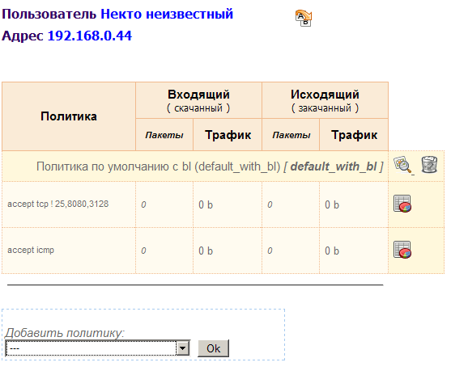
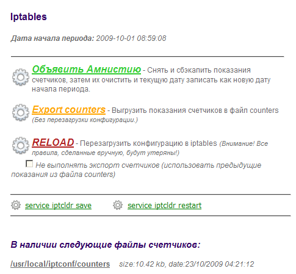

Содержание Ipset man page :: Политики: основы, синтаксис, управление :: Политика - это краткое схематичное, синтаксически соответственно оформленное, описание видов сетевого трафика с указанием действий, которые должен применять маршрутизатор к этим видам трафика. policy <policy_name> { Примечание: если Вы создаете политику из веб-интерфейса, то первую строку "policy <policy_name> {" и последнюю строку "}" писать НЕ НУЖНО. Программа эти теги использует для идентификации политик и отделения их друг от друга, поэтому при созхранении политики начальные и конечные теги будут добавлены автоматически. Но если Вы в консоли пишете политику, непосредственно редактируя файл policies, Вы должны обязательно использовать полный синтаксис. Да, и еще кое что: обратите внимание что закрывающая скобка политики расположена на отдельной строке, а открывающая скобка - на одной строке с названием политики. Это "правильный" синтаксис, к которому программа приучалась с рождения, пожалуйста, используйте именно такое написание. По порядку о назначении тегов: <proto> может быть tcp, udp, icmp или all. <ports> может быть одним цифровым портом или несколькими портами через запятую в скобках: (25,1080,3128). Порт или набор портов может иметь отрицание, которое будет означать отрицание порта или ВСЕГО набора портов, причем ставится отрицание внутри скобок: (!25,1080,3128). dst | src указание направленности трафика (--sport/--dport) : если src, то трафик идет с вышеуказанных портов, а если dst - на вышеуказанные порты. По умолчанию dst. К примеру, если у нас стоит задача описать ответный трафик почтового сервера (внутри сети есть почтовый сервер, к которому из интернет создан доступ через DNAT, а у нас стоит задача описать в политике трафик, который идет ОТ почтового сервера в интернет), то в этом случае это будет src from 192.168.0.10, где ip-адрес это <address> from | to если указано, то при генерации правила, в качестве соответствующего аргумента (-s если from и -d если to) используется указанный в этой опции адрес. По умолчанию если iptables принимает в правиле сурс или дестинейшн пустым, то понимает его как all (разрешено все). К примеру, если Вам нужно разрешить трафик tcp (25,110,80) только на mail.ru, то так и пишем: accept tcp (25,110,80) to www.mail.ru. Имейте ввиду (!) что при генерации правила программа вместо www.mail.ru попытается подставить IP (доменное имя в правило iptables пихать как то некорректно), доменное имя от IP она пытается отличить по наличию трех точек, что может быть корректно не всегда. Поэтому желательно использовать все таки IP. Еще пример: Вам нужно сделать проброс порта tcp:3389 внутрь сети, но только с двух ip-адресов. Тогда политика будет выглядеть так: title "Terminal Services DNAT for 2piplz"Согласитесь, несложный синтаксис? :) quota <quota> Здесь указывается квота трафика, при достижении которого этот конкретный accept работать перестанет. Может указываться просто цифрами (понимается как байты), можно указывать обозначения мегабайт и гигабайт: 750mb, 2gb и т.п.. Т.е. если в политике несколько строк accept с разным трафиком, но quote указано только на одном accept, то при достижении лимита остальные два продолжат работать. Заметьте, у действия SNAT адрес source не указывается, в этом нет необходимости т.к. через какой внешний интерфейс уходит трафик определяет опция out. Так жде происходит и при действии MASQUERADE. Собственно, описанные три действия имеют свои прямые корни из iptables и, надеюсь, будут понятны многим читателям. А вот о действии INPUT я поясню - это действие было специально добавлено для обработки трафика, идущего не транзитно через маршрутизатор, а локально к демону или процессу, работающему на сервере. В основном правила, генерируемые этим действием, выполняют accept для трафика своего демона и, если в политике указывается опция count, то "прогоняют" трафик через цепочки подсчета трафика. Таким образом это действие может использовать для подсчета и сбора статистики входящего и исходящего трафика для локальных приложений сервера. Некоторые примеры политик Вы можете найти в дистрибутиве Fantomas в файле policies. Наверх Содержание :: Ipset: управление списками сет-листов ipset :: Что такое ipset? * iptcldr - скрипт на bash, является по сути доработанной версией init-скрипта iptables 1.4.3.2, предназначен для корректной обработки во время загрузки и выгрузки процедур выгрузки/чтения счетчиков клиентского трафика, выгрузки/чтения списка сет-листов из файла ipsetlist (см.чуть ниже), а также для генерации при загрузке конфигурации правил Iptables c применением последней версии выгруженных до перезагрузки счетчиков трафика.
Тот факт, что Fantomas напрямую работает с Ipset, на самом деле очень сильно развязывает руки администратору: получается, работать с сет-листами возможно не только через сет-панель Fantomas, но и просто из консоли, и вообще как угодно - при любом конфигурировании ipset, Вы настраиваете те же сет-листы, которые используются Fantomas. Единственное что при этом важно учесть (ВНИМАНИЕ!) - инит-скрипт iptcldr при старте загружает сет-листы, имена которых будут найдены в файле /path-to/iptconf/ipsetlist, где они записаны по принципу "один сетлист - одна строка, без знаков препинания". В этот файл имена сет-листов попадают автоматически, если Вы создаете их через сет-панель, в противном случае, если хотите чтоб после перезагрузки сет-лист был загружен, Вам прийдется править файл ipsetlist собственноручно. Вот пример использования двух сет-листов разного типа, объединенных третьим сет-листом (соответственно, при одном запросе, проверка насовпадение условия будет выполняться по обоим сет-листам последовательно): ipset -N set_video_nets nethashВАЖНО: Fantomas создает для работы сетлист под названием locals- он содержит список локальных подсетей и используется генератором правил Fantomas для проверки совпадений src/dst адресов одним правилом сразу по всему списку. НЕ УДАЛЯЙТЕ и НЕ Изменяйте самостоятельно этот сетлист! Иначе корректность работы программы НЕ гарантируется! Наверх Содержание :: Группы и клиенты: создание, редактирование, применение политик :: Данные о группах и о клиентах лежат в каталоге из переменной $users_dir (по умолчанию /usr/local/iptconf/usr). Именно такие файлы Fantomas будет считать файлами групп клиентов, в которых должны содержаться сведения о клиентах, состоящих в группах, соответствущих именам файлов. По умолчанию каталог usr пуст. Но если при установке Fantomas обнаружил установленный сканер nmap, то скрипт-установщик, запросив подтверждение, должен был просканировать локальные подсети и составить список доступных хостов. В этом случае все найденные клиенты были размещены в группе "default" (usr/_usr_default). Если понадобится - скрипт, работающий с nmap, Вы можете найти в каталоге tools, под именем sbnetscan. Cкрипт сканирует подсеть, которую Вы ему указываете, ищет новые адреса и пишет их по-умолчанию в файл _usr_default (Это настраивается в самом скрипте в самом его начале в переменной tusr). Политика по умолчанию проставляется та, что указана в теге _default_policy) в указанном файле группы клиентов, по умолчанию это политика "default". То есть Вы можете создать нужную Вам политику, создать группу клиентов с указанием созданной политики как _default_policy, после этого прописываете название файла группы в скрипте и после этого запускайте сканирование. Найденные клиенты будут занесены в указанную группу с указанной политикой. Синтаксис файлов "_usr_*" следующий: title "Подробное название группы клиентов"Полагаю, с первыми двумя строками все понятно. Поясню по остальным: каждая строка начинается ip-адресом клиента, после которого может быть тег "policy", который через двоеточие указывает на одну или несколько политик, назначенных клиенту. Внимание!: Если в списке назначенных политик их несколько, то они перечисляются через запятую и берутся в скобки, например, так: policy:(policy1,policy2,policy3). Тег "cname" служит для указания имени клиента, которое должно указываться в кавычках и без пробелов. Пробелы в именах возможно вводить когда Вы присваиваете имя клиенту в веб-интерфейсе - там при сохранении пробелы автоматически подменяются на подчеркивания. Если после адреса клиента в строке тег "policy" отсутствует, то подразумевается что клиент использует политику по умолчанию для группы (_default_policy). ♦ Применение политик, генерация правил iptablesРазумеется, если Вы пропишете вручную в файле группы строку клиента вида: 192.168.0.44 policy:some_nat cname:"Some_man_user"
... то конфигурация Iptables при этом никак не изменится. Для того, чтобы Fantomas в этом случае сгенерировал нужные правила согласно списку политик клиента 192.168.0.44, нужно запустить в Fantomas процедуру RELOAD*. Это можно сделать из веб-интерфейса в разделе "Система->Iptables" или в консоли путем запуска: iptconf.php reload
* RELOAD - штатная процедура Fantomas, при запуске которой происходит выгрузка счетчиков клиентского трафика, полная очистка конфигурации Iptables и Ipset, и далее заново загружаются сетлисты по списку файла ipsetlist, после этого происходит чтение настроек политик ВСЕХ клиентов и генерация правил по каждому клиенту с применением показаний счетчиков трафика из последней доступной версии файла счетчиков (по умолчанию те счетчики, что выгружались при запуске процедуры).
Однако, это все пережитки ранних версий Fantomas... Подробно обо всех процедурах ниже. В Fantomas есть возможность применять и удалять действие политик на конкретном клиенте "на лету", без запуска RELOAD и полной перезагрузки конфигурации. Для того, чтобы к клиенту применить новую политику (тем самым добавив этому клиенту разрешающие или запрещающие правила по этой политике), в веб-интерфейсе нужно в дереве меню развернуть список групп, открыть группу, найти клиента, открыть страницу клиента. И на этой странице в форме добавления политики выбрать в разворачивающемся списке нужную политику и нажать "Ok". При этом правила согласно политик для выбранного клиента сгенерируются сразу при добавлении политики. На той же странице клиента доступна кнопка удаления политики: Скрин 1. страница клиента:
 Также можно применять и удалять политики "на лету" и в консольном режиме. Для этого используется скрипт iptconf.php со следующим синтаксисом:
iptconf.php group=<groupname> client=<client_ipaddr> policy=<policyname> [AddPolicy|DeletePolicy]
возможен и альтернативный синтаксис:iptconf.php --grp=<groupname> --cli=<client_ipaddr> --pp=<policyname> [addpol|delpol] Ну и напоследок: (ВАЖНО!) Имейте ввиду что нельзя изменять политику, которая применена к одному или нескольим клиентам. Причина: при редактировании политики изменяется ее текст, новый текст записывается вместо старого, но правила Iptables, созданные на базе старой политики НЕ ПЕРЕГЕНЕРИРУЮТСЯ СРАЗУ при этом. Для того, чтобы изменения политики вступили в силу нужно запустить процедуру RELOAD. В случае, если новые правила accept в измененной политике существенно отличаются от прежних, то будьте готовы к тому что Вы потеряете показания счетчиков по этой политике. Причина проста - программа не сможет идентифицировать какому из новых accept соответствуют экспортированные до этого счетчики. Наверх Содержание :: Глобальные процедуры: конфигурирование системы и обработка счетчиков :: Fantomas имеет процедуры, которые выполняются не "на лету" по кому то отдельно, а глобально для всей конфигурации в целом. Также файл counters может использоваться и просто как бэкап показаний счетчиков - при каждом экспорте старый файл counters не затирается, а переименовывается и перемещается в каталог из переменной $backup_dir. К примеру, если вдруг каким то образом показания счетчиков сбились, можно взять самый актуальный файл счетчиков, подсунуть его на место counters и запустить RELOAD с опцией NoKeepCounts (об этом дальше). Режим имеет опцию NoKeepCounts - если она указана, то экспорт счетчиков не производится и при формировании правил сведения о счетчиках берутся из файла counters, который был записан при предыдущем экспорте (или который Вы заранее на его место подсунули). Запускать процедуры возможно как из веб-интерфейса так и в консольном режиме. В веб-интерфейсе панель глобальных процедур расположена на странице состояния Iptables, в меню "Система->Iptables". Скрин 2. панель глобальных процедур:
 В консольном режиме запуск процедур выполняется через параметры скрипта iptconf.php: iptconf.php SaveCounts Заметьте, NoKeepCounts указывается перед самим Reload - это правильное написание аргументов. Если написать наоборот, то Reload может случайно "забыть" что ему говорили "NoKeepCounts" и станет выгружать счетчики по новой... В общем то, да, это баг - нужно переделать цикл в котором обрабатываются параметры коммандной строки в скрипте iptconf.php, но руки пока не дошли - не очень то надо было, т.к. я обычно все делал через веб. Исправлю. Наверх Содержание :: Iproute2: создание конфигурации :: Fantomas имеет возможность при старте своего init-скрипта iptcldr загружать список маршрутов Iproute2. Эта опция включается в разделе "Система -> Iproute2", там доступно включение/выключение самой опции, также там можно указать сам файл конфига cо списком маршрутов, и еще там есть панель таблиц маршрутизации в которой можно добавлять/удалять таблицы и просматривать загруженные маршруты по таблицам. ### table <tablename> zone Обратите внимание на количество знаков "#" и написание "table >name< zone" - писать нужно именно так! Это связано с тем что именно по этим строчкам программа распознает где начинается и где заканчивается секции таблиц. Соответственно, сколько таблиц маршрутизации, столько и секций в файле должно быть. Из веб-интерфейса файл не редактируется, т.к. имхо обычно такой файл вообще настраивается один раз и забывается, поэтому для редактирования файла iproute2-init пользуйтесь консолью. В консоли есть специальная утилита для работы с таблицами маршрутизации, описанными в файле iproute2-init - tabloid. Это скрипт, располагающийся в подкаталоге tools, его синтаксис предельно прост: tabloid {up|down|reload} [target=<tablename>] Наверх Содержание |